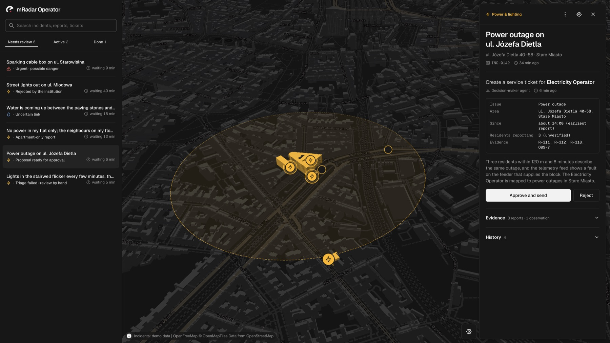
Mapa usterek Krakowa.
Mieszkańcy zgłaszają usterki formularzem albo głosem. Operator łączy zgłoszenia i przekazuje je właściwej jednostce miejskiej, a postęp widać na mapie.
HackYeah 2026 · Zadanie otwarte: Smart City
Mieszkańcy nie widzą wcześniejszych zgłoszeń ani ich statusu. Ta sama usterka trafia do miasta wielokrotnie albo wcale.
Operatorzy przyjmują zgłoszenia z wielu kanałów. Każde trzeba ręcznie powiązać z innymi i przypisać do właściwej jednostki miejskiej.
Jednostki miejskie dostają zlecenia z opóźnieniem, a informacja o postępie prac nie wraca do operatorów i mieszkańców.
Zgłoszenie przechodzi od mieszkańca przez operatora do jednostki miejskiej, a każda zmiana statusu wraca na mapę.
Każda zmiana statusu pojawia się na mapie mieszkańca
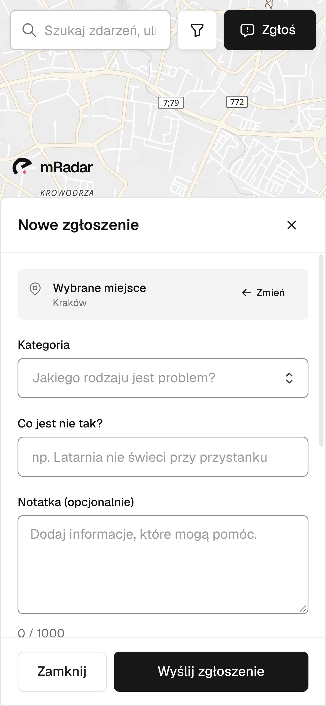
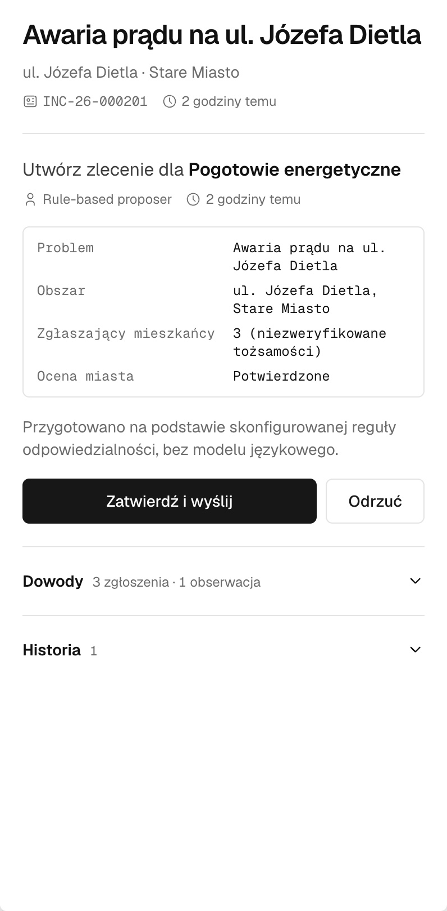
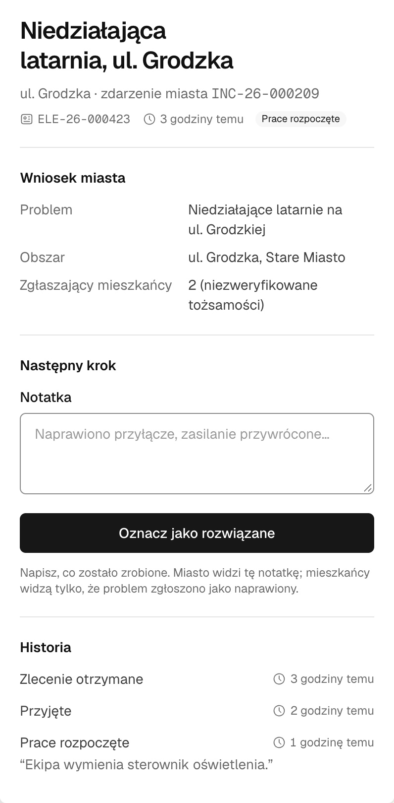
Pinezka, kategoria i pilność albo rozmowa głosowa. Bez zakładania konta.
Powiązane zgłoszenia tworzą jedno zdarzenie z przygotowanym zleceniem. Wysyła je operator.
Przyjmuje zlecenie, rozpoczyna prace, oznacza jako rozwiązane.
mradar.delvengine.com
Każde zdarzenie ma status: zgłoszone, potwierdzone, w trakcie, rozwiązane. Jeśli problem jest już zgłoszony, „Też mam ten problem” dolicza mieszkańca bez tworzenia duplikatu.
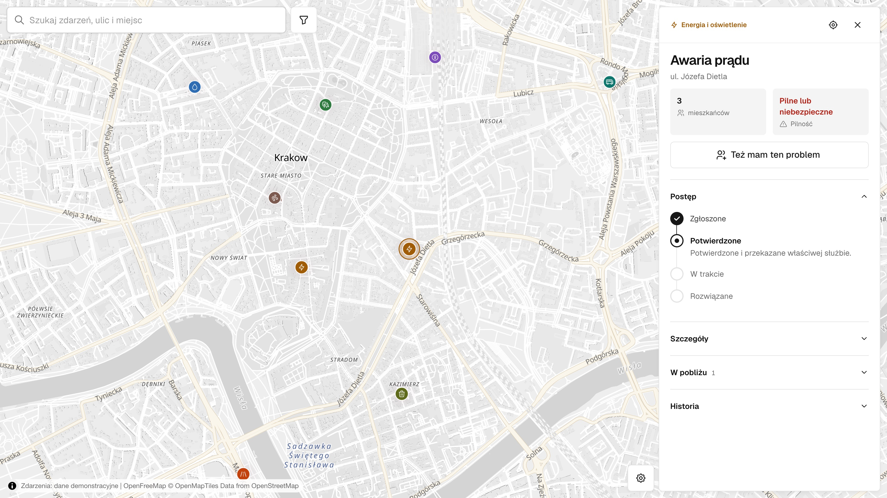
Przycisk mikrofonu jest na dole mapy. Asystent mówi po polsku, dopytuje o brakujące szczegóły i sam wypełnia zgłoszenie.
Miejsce. Podany adres od razu pojawia się na mapie. Asystent rozpoznaje też nazwy miejsc, np. „przy Tauron Arenie”.
Duplikaty. Przed utworzeniem nowego zgłoszenia asystent sprawdza istniejące zdarzenia.
Krótka rozmowa. Asystent nie pyta o to, co już padło, a na koniec pokazuje tylko podsumowanie zgłoszenia. Jeśli nie wiadomo, czy chcesz je wysłać, zada jedno krótkie pytanie.
Formularz. Przycisk „Kontynuuj” przenosi ten sam szkic do formularza.
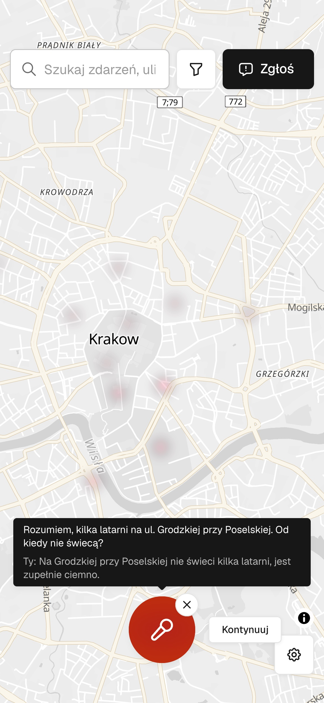
Głos płynie bezpośrednio między przeglądarką a agentem ElevenLabs. Agent nie ma dostępu do bazy. Może tylko poprosić przeglądarkę o jedno z pięciu narzędzi mRadar, przypisanych do szkicu tego mieszkańca.
API, sesje, szkice zgłoszeń, PostgreSQL
Mikrofon, mapa, SDK ElevenLabs
Polski głos, model GPT-6.1 Sol
Prywatność. Bez nagrywania dźwięku, transkrypcja u dostawcy przez 1 dzień.
Limity. Rozmowa do 5 minut, jedna naraz, 5 startów na 10 minut.
Odporność. Gdy głos zawiedzie, ten sam szkic czeka w formularzu.
Wskaż miejsce. Przesuń mapę, aż pinezka trafi w dokładny punkt, albo użyj swojej lokalizacji.
Opisz problem. Wybierz jedną z ośmiu kategorii i określ, jak bardzo jest pilny.
Wyślij. Zgłoszenie trafia do miasta, a jego postęp widzisz na mapie.
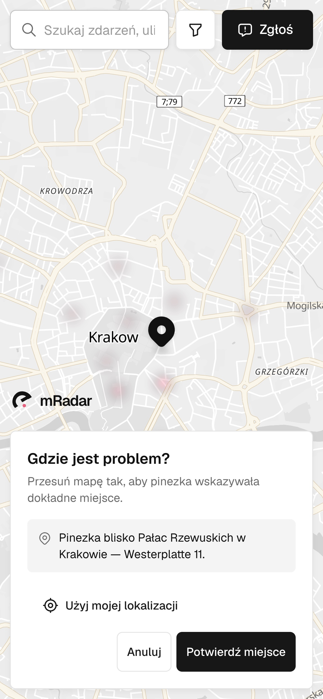
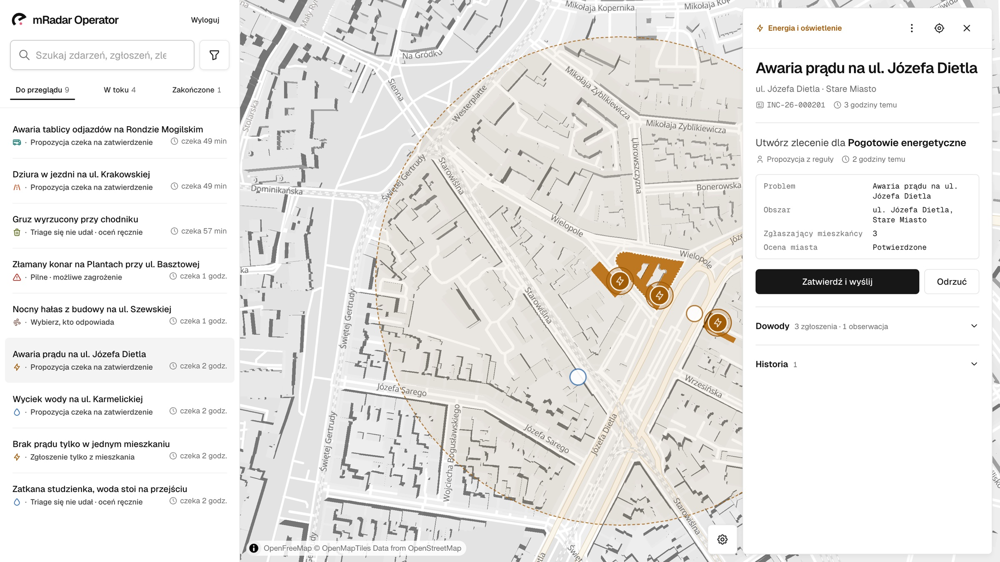
/operations
Zgłoszenia bliskie w miejscu i czasie łączą się w jedno zdarzenie. Qwen na Scaleway przygotowuje zlecenie dla właściwej jednostki miejskiej na podstawie zapisanych dowodów. Zlecenie trafia do jednostki miejskiej dopiero po zatwierdzeniu operatora.
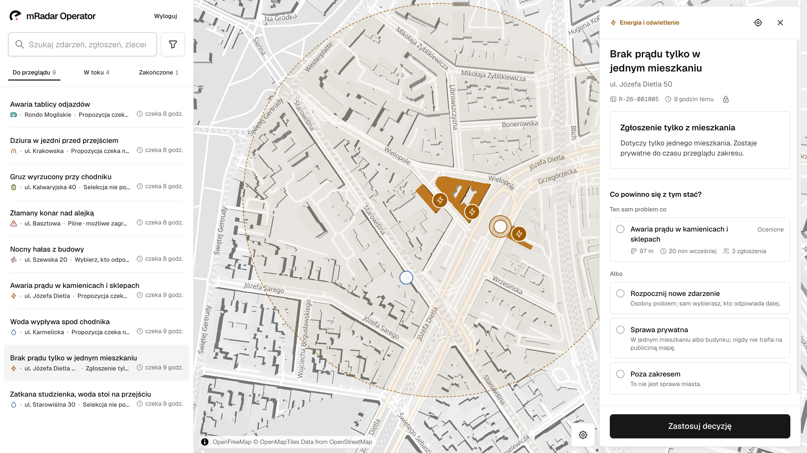
Podobne zdarzenia. Panel pokazuje kandydatów obok siebie: odległość, odstęp czasu i liczbę zgłoszeń.
Sprawy prywatne. Problem w jednym mieszkaniu zostaje prywatny i nie trafia na publiczną mapę.
Praca równoległa. Każda decyzja zawiera wersję, na której ją podjęto. Nieaktualny widok odświeża się i nie nadpisuje cudzych zmian.
Pilne sprawy. Iskrzący kabel czy złamany konar trafiają na górę kolejki z przypomnieniem o numerze 112.
Każda jednostka miejska widzi tylko swoje zlecenia. Przyjęcie, rozpoczęcie prac i rozwiązanie od razu aktualizują panel operatora i publiczną oś czasu.
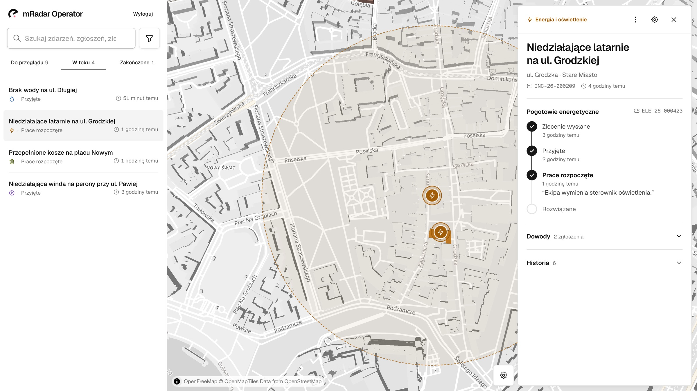
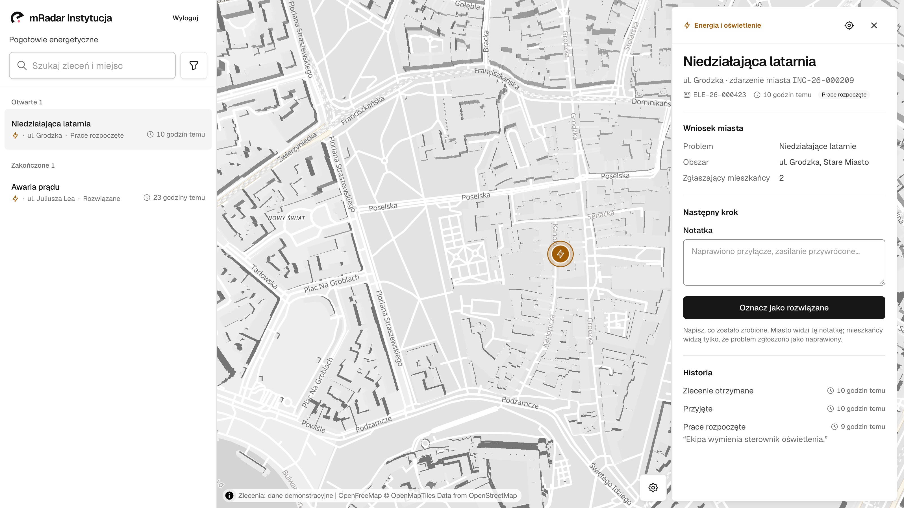
Operator · /operations · zlecenie wysłane, prace rozpoczęte
Jednostka miejska · /institution · to samo zlecenie, następny krok
Najpierw najważniejsze informacje. Dla dociekliwych reszta w rozwijanych sekcjach.
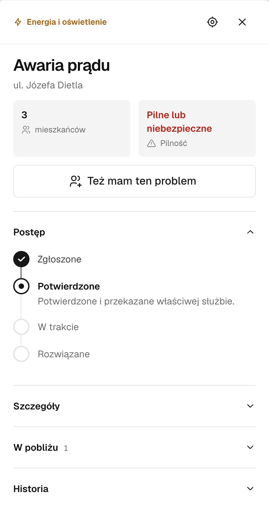
Ta sama barwa i ikona w pinezkach, filtrze, listach i panelach.
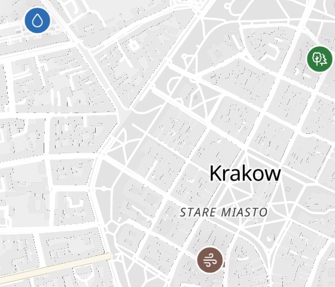
0
Test axe-core w 32 stanach trzech ekranów. Pełna obsługa klawiaturą.
Status, miejsce i czas widać od razu przy punkcie.
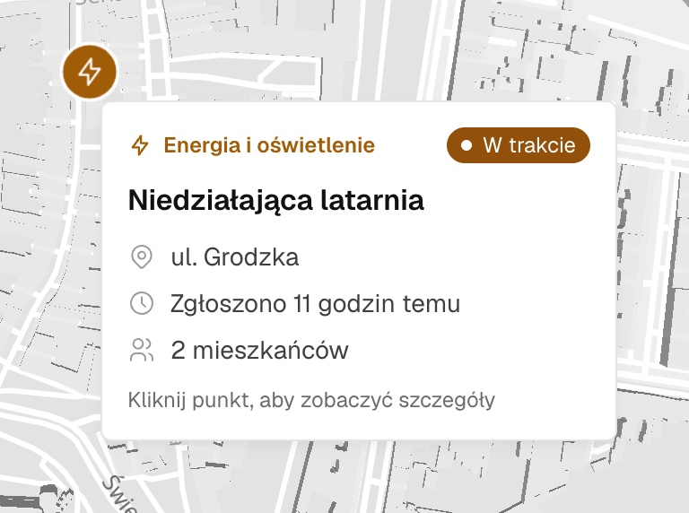
Obszar zdarzenia i budynki, których dotyczą zgłoszenia.
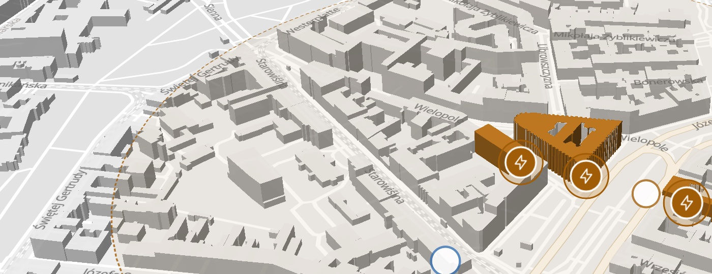
300 m · 60 min
Zgłoszenia tego samego problemu w tym promieniu i czasie łączą się w jedno zdarzenie. Reguła jest deterministyczna, a niejasne przypadki rozstrzyga operator.
Qwen 3.6 na Scaleway nadaje kategorię i typ problemu. Jeśli odpowiedź nie pasuje do katalogu, zgłoszenie trafia do ręcznego przeglądu.
Reguły wskazują jednostkę miejską po kategorii, typie i obszarze. Gdy pasuje kilka albo żadna, wybiera operator.
1×
Zatwierdzenie kolejkuje jedno zadanie w PostgreSQL. Worker zapisuje zlecenie, znany błąd albo nieznany wynik do uzgodnienia i nigdy nie wysyła zlecenia ponownie.
Qdrant łączy słowa (BM25) i znaczenie (E5 na naszym CPU). Każda rola przeszukuje tylko teksty, które może widzieć.
Narzędzia dla agentów AI: kontekst zdarzenia, odpowiedzialność, propozycja zlecenia. Rolę określa token dostępu i agent nie może jej zmienić.
Jedna aplikacja i jeden worker na maszynie Scaleway. Dane źródłowe są w PostgreSQL, a indeks wyszukiwania można odbudować.
/ mapa mieszkańców
/operations panel operatora
/institution skrzynka jednostki miejskiej
Next.js 16, React 19, Appica UI, MapLibre
Next.js strony i API z sesjami per rola
Worker grupowanie, indeksowanie, ocena AI, wysyłka zleceń
PostgreSQL zgłoszenia, zdarzenia, zlecenia, historia
Qdrant wyszukiwanie po znaczeniu, model E5 na CPU
ElevenLabs Agents rozmowa głosowa
Scaleway Generative APIs Qwen 3.6 ocenia zdarzenia
Photon adresy z OpenStreetMap
OpenFreeMap kafelki mapy
Kolejka zadań. Zadania czekają w PostgreSQL, gdy worker albo dostawca AI nie działa.
Wersje. Każda zmiana zawiera wersję, a konflikt odświeża widok.
Publiczne pola. Publiczna mapa dostaje tylko dozwolone pola, nigdy treść zgłoszeń.
Dedykowany numer telefonu. Ten sam asystent głosowy przyjmuje zgłoszenie i odpowiada na pytania o jego status, bez aplikacji i bez smartfona.
Potwierdzona tożsamość bez zakładania konta. Zgłoszenia mogą mieć większą wagę, a podwójne głosy da się zablokować.
Własny katalog jednostek miejskich i reguł dla każdego miasta. Dziś mapa i adresy są ustawione na Kraków.
Zlecenia trafiają prosto do systemów, których jednostki miejskie już używają, a statusy wracają automatycznie.
Push, e-mail lub SMS, gdy Twoje zgłoszenie zmienia status.
Obserwowane miejsca i kategorie, alerty o awariach w okolicy.
Zdjęcie w zgłoszeniu, z twarzami i tablicami rejestracyjnymi rozmytymi przed zapisem.
Czasy reakcji jednostek miejskich, powracające awarie i otwarte dane o stanie infrastruktury.
mradar.delvengine.commapa mieszkańców i zgłaszanie głosem
mradar.delvengine.com/operationspanel operatora
mradar.delvengine.com/institutionskrzynka jednostki miejskiej
Loginy i hasła do /operations i /institution są w załączonej notatce.
github.com/delve-group/smart-city
Zbudowane z pomocą asystentów AI do programowania. Jednostki miejskie, zgłoszenia i zlecenia na mapie są fikcyjne.